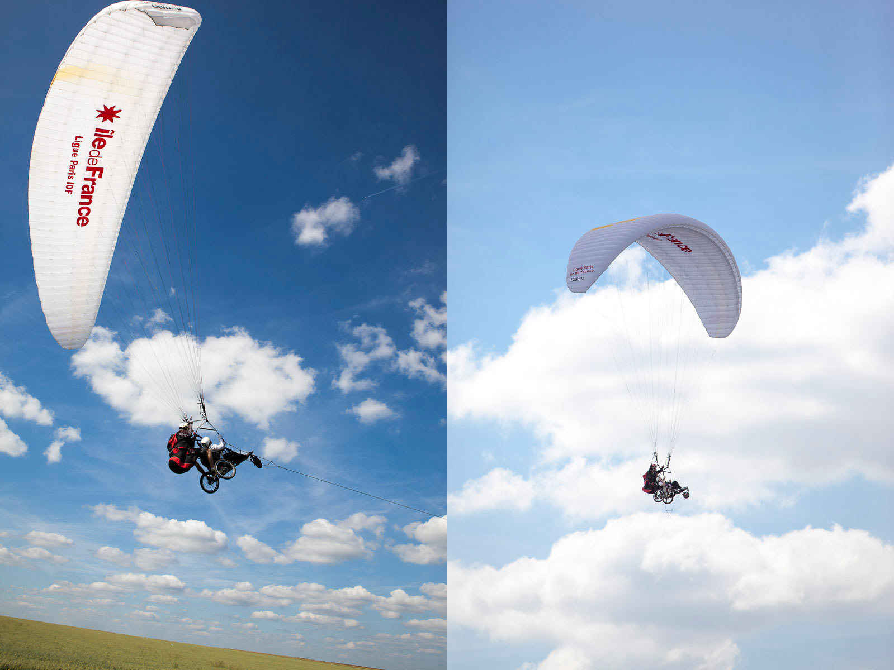
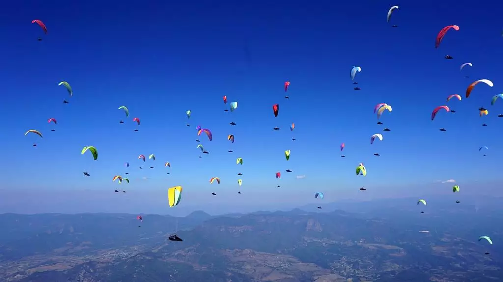
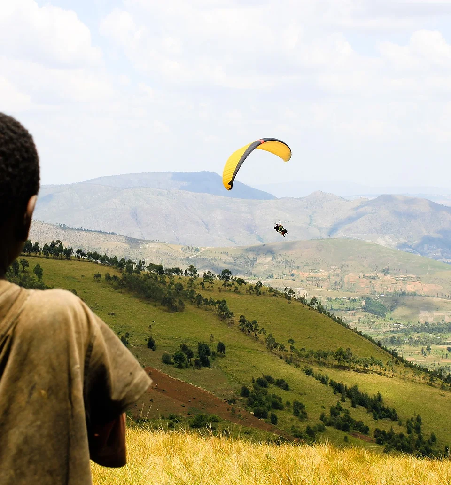

Les activités du club
Journées Découverte
Nous organisons des journées découverte pour vous permettre de vivre au rythme du vol libre. Sous réserve d'une météo favorable, vous pourrez réaliser votre baptême en parapente biplace accompagné d'un pilote qualifié.
Le parapente étant fortement dépendant des conditions, nous vous prévenons généralement 24h à 48h à l'avance si un créneau se confirme.
Nos sites privilégiés
Situés entre 150 et 300 km de Paris, nous pratiquons le covoiturage pour nous y rendre :
- Côte normande : Vol insolite entre ciel, mer et falaises.
- Bourgogne : Survol des vallons plantés de vignes.
- Suisse Normande : Au-dessus des bocages verdoyants.
Réglé au club après réalisation du vol (hors frais de covoiturage).
journeedecouverte@lesailesdesenart.com

Parapente Handi
Le club s'engage pour rendre le vol libre accessible à tous. Une journée type débute par une présentation du parapente, suivie de vols en biplace assurés par des biplaceurs qualifiés Handicare.
Contact Guy Buisson : guy.buisson@gmail.com
Compétition
Bien que le club n'ait pas une culture uniquement tournée vers la compétition, plusieurs de nos membres sont d'excellents compétiteurs évoluant au niveau national. Nous encourageons le dépassement de soi et le partage de performance.
president@lesailesdesenart.com

Ailes pour Eux : ils n'ont rien mais ils volent !
Nous récupérons du matériel (voiles, sellettes, secours, casques...) pour les pilotes de pays n'ayant pas nos moyens.
Le circuit est 100% bénévole : aucune transaction commerciale. Les révisions sont offertes par Rip'Air et Wingshop.
L'acheminement est assuré gratuitement par des pilotes voyageurs ou du personnel navigant solidaire.
Initié par Catherine Mouligné, ce projet est aujourd'hui porté par l'association "Ailes pour Eux" avec les mêmes principes : donner la liberté de voler.
